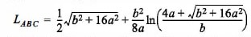
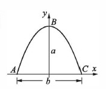

Ejercico 11 de clase
The are length of a segment of a parabola ABC of an ellipse width semi-minor axes a and b is given approximately by:
 
Determine L(ABC) if a=11 in. and b=9 in
The result according to the calculator should be: 24.56373...